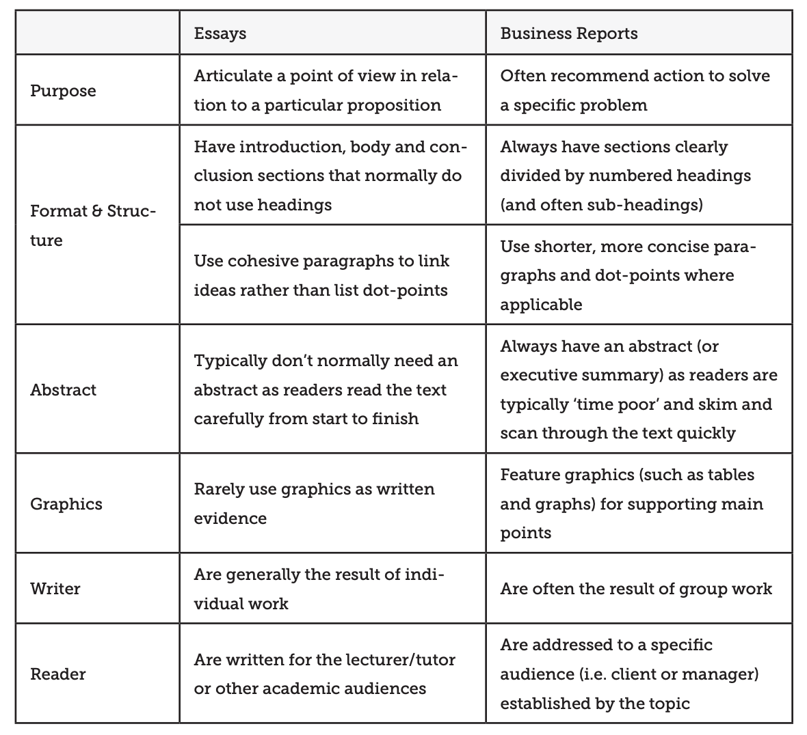

Stats 101 Spring 2023 Final
Shanghai Property Report

Assignment instructions
Task
Imagine you have been newly hired by a online dating app web developer to help focus on which users are generating the most interest on your site. In particular, on your dating app, a ‘like’ is called a ‘kiss’. Users can indicate interest in another member on the site by giving them a kiss. While attraction to others on a dating app is in part due to aesthetics, it can also be influenced by the completeness and features of a user’s account on the site, such as number of photos, length of profile text, and so on. To keep the analysis simple, we will focus on female users of the site as it seems very possible that different profile characteristics will matter for male users.
Your job is to write a report that fully explores what variables are related to counts_kisses. A detailed description of the variables can be found on the data source webpage here
For the general regression model of kisses, you need to find specific factors that are associated kisses and create a high quality regression model with multiple variables that explains this relationship.
Lovoo is like many dating apps where you can pay extra money to have your profile featured more prominently or provides some additional features - this is how the app primarily makes money. As a secondary analysis, you should also carefully consider which of the paid features (incidated in the dataset by isFlirtstar, isHighlighted, isInfluencer, and isVip) are most strongly related to to the number of profile views (counts_profileVisits). It is important for the site and for users to know which of these paid features is most effective in driving additional profile views.
You will need to use all the material we learned in class to:
- Think carefully about the sampling frame, what your research expectations and questions are, and how the method of datat collection can influence your findings
- Interpret summary data
- Examine important bi-variate relationships
- Construct a high-quality regression model of kisses
- Interpret this model, including ALL relevant diagnostics and \(p\) values.
- Conduct a supplemental analysis into which paid features are most strongly related to profile views (this analysis can also be a regression model or another form of analysis (table, graph, chart) - space to be creative here).
Specific requirements
- Save this document as a new document (Save As…) and rename it
Dating app user report. - Rename the title of your report to
Dating app user report - Delete the
Assignment instructionssection - Final report should be between 2000 and 3000 words
- Maximum 12 graphs
- Maximum 6 tables
- Suggested structure:
- Introduction
- Literature review and hypotheses
- Summary statistics
- Regression interpretation
- Regression diagnostics
- Interpret coefficients
- Supplemental feature analysis
- Conclusion
Points of emphasis
Your job as an analyst is to write a report primarily analyzing what are the factors you think best predict kisses. You should limit your focus to one response variable and 2-4 predictor variables that you think are most important. You secondarily want to consider which paid features are most associated with profile views.
Whether a variable should be included or not in your model should be based on whether the variable is important in evaluating the question posed above. You will need to cite a few sources relevant to answering the question to better help you select variables that you include in your analysis.
Do not exclude a variable just because it initially does not meet the regression requirements. However, consider carefully whether some variables are actually highly related to another predictor variable – do not include collinear variables.
You should focus your graphs and tables on that illustrating the most important information for drawing your conclusion. Choose your tables carefully such that they convey the key information needed to arrive at your conclusion. Do not make tables and graphs of irrelevant information or points that do not need discussing.
Make sure to also interpret the coefficients. You need to interpret the impact of a one unit change in the coefficients on the response variable. You additionally need to examine whether changes in the predictor variables lead to a substantively large or small change in the predictor variable. One way to do this is examining whether changing the predictor variable from its Q1 to Q3 value leads to a large or small change in the response variable. You may want to make a table with this information.
For the supplemental analysis, it does not have to be as in-depth of a consideration of the relationship as the main model. A few paragraphs is enough to discuss your result and one or two key tables/graphs are all that are required. But the statistical work must still be done carefully here! And also be careful to not overstate the certainty of your result here - you can only develop some preliminary findings in this space.
Your report should be a polished, quality product that you would be proud to show your boss/employer. No unnecessary printed code, poorly labeled graphs, or strange looking formatting. Use everything you have learned in this class to make a quality final product! Remember, this document is not a formal essay. Some of the differences between a business report and a formal essay are summarized in the table below (this table and more advice on writing business reports can be found here):
